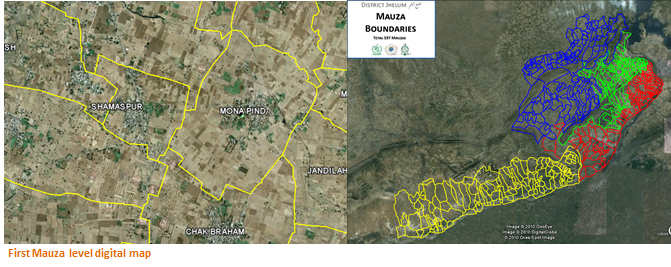

<div class="container">
    <div class="row topspace">
        <article class="col-sm-8 maincontent">
            <div class="your-class">
                <div></div>
                <div></div>
                <div></div>
                <div></div>
                <div></div>
                <div></div>
                <div></div>
                <div></div>
                <div></div>
                <div></div>
            </div>
            <br>
            <p>In 2010, my company won the project where we had to digitize in first phase of the proejct 16 districts of Punjab at Mauza level boundary.</p>
            <br>
            <p>Project was designed to digitize mauzas from hard copy paper made to soft form, extract boundaries at mauza level and digitize them over satellite imagery of SPOT-5. In the end, a web based portal was developed with attributed PCO & ACO attributes to mauzas which could be viewed on the web over Google Fusion Tables.</p>
            <br>
            <p>I designed, developed and deployed the portal from scratch to top. Matlab code was written to join mauza images, adobe photoshop was used to extract the mauza from the image, then the png was geo-referenced on the ArcGIS and merged using GIS softwares & finally a web based solution was deployed over server and opened for online viewing for the public.</p>
        </article>
        <aside class="col-md-4 sidebar sidebar-left">
            <div class="widget">
                <ul class="list-group">
                    <li class="list-group-item pull-left">
                        <h4 class="custom-subsubheader">Company Project</h4>
                        <p><strong>2011</strong></p>
                        <p>Website: <a href="https://floodmaps.lums.edu.pk/mauza-mapping-travel-diary/" target="_blank">Information</a></p>
                        <p>Website: <a href="https://floodmaps.lums.edu.pk/PSDI/Jhelum/" target="_blank">View</a></p>
                    </li>
                </ul>
            </div>
        </aside>
    </div>
</div>